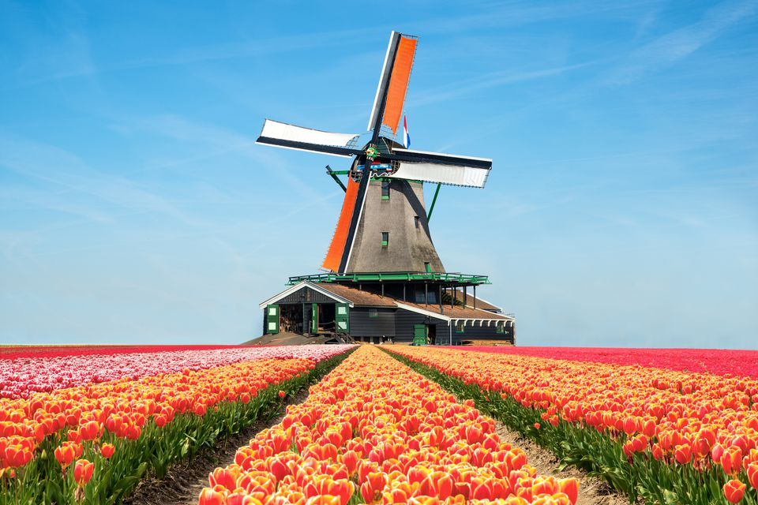
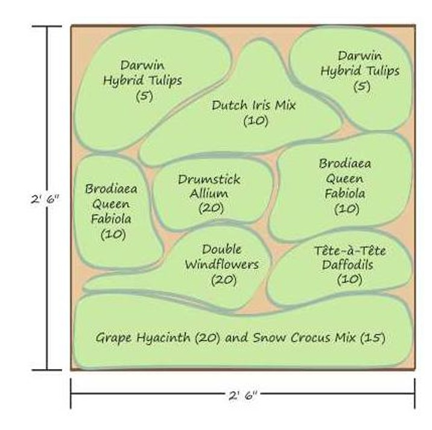

18th Century Dutch Garden Design
Floral abundance, geometric precision, ornamental waterways, and the art of seasonal planting
Dutch garden design is celebrated for its extraordinary attention to horticulture, geometric organization, seasonal colour, and the cultivation of ornamental flowers. The Netherlands developed an international reputation for floriculture, particularly through the commercial cultivation and propagation of tulips, which became one of the country's most recognizable horticultural treasures. Although the Dutch flower trade flourished during the 17th century, its influence continued well into the 18th century, when formal gardens, ornamental estates, and specialized bulb cultivation became increasingly sophisticated. The Dutch garden combined the discipline of formal European garden design with an exceptional enthusiasm for flowers. Carefully arranged planting beds, clipped hedges, straight pathways, canals, fountains, and ornamental water features created landscapes that were both productive and decorative. Unlike gardens that relied primarily on large architectural structures or extensive sculptural displays, Dutch gardens often placed horticulture at the centre of their design. Flowers were treated as living works of art, arranged according to colour, height, flowering season, and visual composition. A defining characteristic was the use of mass planting and repeated colour patterns. Rather than scattering individual flowers throughout a garden, bulbs and flowering plants were arranged in deliberate clusters, producing dramatic displays when in bloom. For a contemporary interpretation, planting in groups of at least 12 bulbs, with larger compositions of approximately five dozen (60) bulbs, creates the abundance and visual impact associated with traditional bulb displays. These quantities are useful design guidelines rather than fixed historical Dutch planting rules.
1.The Flower Trade
The Netherlands experienced an extraordinary expansion of horticulture and international flower trading during the 17th century, particularly during the Dutch Golden Age. Tulips, originally introduced to Western Europe from the Ottoman world during the 16th century, became highly desirable among wealthy Dutch collectors. Their unusual colours, elegant forms, and extraordinary range of varieties made them prized possessions. By the 1630s, tulip speculation had become particularly intense. This episode, commonly called Tulip Mania, involved the trading of bulbs and contracts at extraordinarily high prices before the market collapsed in 1637. However, the lasting importance of this period was not simply financial speculation. It helped establish the tulip as a major horticultural commodity and strengthened the Netherlands' reputation for specialist bulb cultivation.
During the 18th century, Dutch horticulture continued to develop through:
- Bulb propagation: Improving the cultivation, division, and commercial distribution of ornamental bulbs.
- Botanical collecting: Introducing and documenting plants from other parts of the world.
- Specialized nurseries: Developing expertise in growing and supplying ornamental flowers.
- Estate gardening: Incorporating seasonal floral displays into formal residential landscapes.
- International trade: Exporting bulbs, plants, and horticultural knowledge across Europe.
Dutch garden design during the 18th century also reflected the wider European enthusiasm for formal landscapes, with influences from French Baroque gardens and later English landscape gardening. It is important to distinguish the periods: the most famous tulip speculation belongs to the 17th century, while 18th-century Dutch gardens continued and refined the country's horticultural and formal garden traditions.
2. Flowers of the Dutch Garden
Flowers were the defining feature of the Dutch garden. Their arrangement was deliberate, with attention given to colour combinations, flowering periods, height, and the overall visual rhythm of the landscape. Bulbs were particularly important because they offered a predictable seasonal succession of flowers. Spring gardens could be transformed through successive displays of snowdrops, crocuses, anemones, daffodils, and tulips. For a richly composed Dutch-inspired planting scheme, flowers should be grouped rather than planted individually.
Planting principles:
- Arrange bulbs in clusters of at least 12 for a strong visual presence.
- Use approximately 60 bulbs for larger mass-planted displays.
- Combine varieties with complementary or contrasting colours.
- Repeat the same planting combinations throughout the garden.
- Layer bulbs according to flowering season to extend the display.
- Position taller varieties behind shorter plants.
- Use ornamental hedges and pathways to frame the flower beds.
Anemones
Anemones (Anemone coronaria) introduce brilliant colour and delicate floral forms to the Dutch garden. Commonly known as poppy anemones, they produce vivid flowers in red, purple, pink, blue, and white, often with contrasting dark centres. Their jewel-like colours make them particularly effective in mass plantings, where groups of complementary varieties can create striking seasonal displays. Anemones can be arranged in drifts along garden borders, planted beneath deciduous trees, or incorporated into mixed bulb beds. Their relatively low growth makes them suitable for the foreground of layered planting compositions. For a Dutch-inspired arrangement, combine red, white, and deep purple anemones in repeated clusters to create a vibrant floral tapestry.
Calla Lily
The calla lily (Zantedeschia) is admired for its sculptural flowers and elegant foliage. Its distinctive trumpet-shaped spathes rise above broad, glossy leaves, creating a sophisticated contrast with smaller flowering bulbs. Although native to southern Africa rather than historical Holland, calla lilies became part of the wider European ornamental plant palette and suit a modern Dutch-inspired garden. White calla lilies are especially effective in formal planting schemes, where their clean architectural form complements clipped hedges, stone pathways, and ornamental water features. Coloured varieties in yellow, pink, and burgundy can introduce additional interest. In colder climates such as the Okanagan, calla lilies are best treated as tender plants. Their rhizomes can be lifted and stored appropriately over winter, or the plants can be cultivated in containers.
Crocus
Crocuses (Crocus species) are among the earliest flowers to announce the arrival of spring. Their compact growth and jewel-toned flowers make them ideal for naturalistic drifts and formal bulb compositions. Available in purple, violet, white, and yellow, crocuses create an early seasonal display before many other garden plants begin flowering. They are particularly effective when planted in generous clusters beneath deciduous trees, along pathways, or in open lawns. Their small stature allows them to be combined with later-flowering bulbs without overwhelming the planting scheme. For a traditional Dutch-inspired effect, plant crocuses in repeated groups of colour, allowing the individual clusters to merge into a continuous spring display.
Daffodils
Daffodils (Narcissus species) bring cheerful colour and strong seasonal structure to the Dutch garden. Their trumpet-shaped flowers, upright stems, and distinctive yellow, cream, and white colouring make them indispensable spring bulbs. Daffodils are particularly useful for establishing large blocks of colour. They can be planted along pathways, beneath trees, within formal flower beds, or as repeated borders around lawns. The diversity of narcissus varieties allows gardeners to create different flowering heights and seasonal transitions, from early miniature varieties to larger late-spring cultivars.
Designs
- Mass plant yellow daffodils for a traditional spring display.
- Combine white and pale-yellow varieties for a more restrained composition.
- Plant shorter varieties along the front of formal borders.
- Repeat the same variety throughout the garden to create continuity.
Daffodils are also well suited to the Okanagan climate, where many varieties perform reliably in sunny, well-drained locations.
Roses
Roses bring a romantic quality to the otherwise disciplined geometry of the Dutch garden. Their flowers, fragrance, and variety of growth habits make them suitable for both formal and informal planting arrangements. Old-fashioned roses, shrub roses, and climbing varieties can all contribute to a Dutch-inspired landscape. In formal gardens, roses may be arranged in symmetrical beds bordered by clipped hedges or planted along pathways to soften the geometry of the surrounding landscape.
Colours can be coordinated to establish a particular garden atmosphere:
- White roses: Create an elegant and restrained composition.
- Pink roses: Introduce softness and romantic character.
- Red roses: Provide strong visual contrast.
- Yellow roses: Complement spring bulbs and warm-toned stonework.
Climbing roses can also be trained over trellises, garden entrances, and pergolas, introducing vertical interest without sacrificing the formal organization of the garden.
Snowdrops
Snowdrops (Galanthus species) are among the earliest flowering bulbs of the year. Their delicate white flowers often emerge while winter conditions are still present, making them an important symbol of seasonal renewal. Their understated appearance provides a beautiful contrast to the more colourful spring displays that follow. Snowdrops are especially effective when planted in naturalistic groups beneath deciduous trees, along shaded pathways, or at the edges of woodland-style garden areas. Unlike the bold colour blocks of tulips and daffodils, snowdrops introduce a softer, more delicate visual transition into spring. They can also be combined with early crocuses and other small bulbs to create layered seasonal planting.
Tulips
Tulips (Tulipa species) are the defining flowers of Dutch horticultural history. Their extraordinary diversity of colours, patterns, and flower forms transformed bulb cultivation into an internationally recognized art. During the Dutch Golden Age, tulips became prized collector's plants, particularly unusual varieties with distinctive colour patterns. Some historical tulips displayed dramatic flame-like markings caused by a virus that affected flower pigmentation. These were highly sought after, although modern cultivation generally favours healthy, virus-free varieties. The tulip's upright stems and distinctive flowers make it exceptionally suited to formal planting arrangements.
Popular tulip forms include:
- Single Early Tulips: Classic cup-shaped flowers that introduce colour early in the season.
- Double Tulips: Full, peony-like flowers that create a luxurious appearance.
- Lily-Flowered Tulips: Elegant pointed petals that open outward.
- Parrot Tulips: Dramatic, ruffled petals with irregular edges.
- Fringed Tulips: Flowers with finely serrated petal margins.
- Triumph Tulips: Strong-stemmed varieties valued for formal garden displays.
In a Dutch-inspired garden, tulips are most effective when planted in substantial blocks rather than scattered throughout the landscape. A formal arrangement might feature a large central bed of red tulips, surrounded by white and yellow varieties, with smaller complementary clusters repeated along the garden's perimeter. For an especially impressive display, consider planting approximately 60 bulbs of one variety within a single bed, then repeating that combination in other parts of the garden.
3. Formal Dutch Garden Design
Formal Dutch gardens were distinguished by their precision, symmetry, and close relationship between planting and architecture. Geometric layouts established the garden's framework, while rows of ornamental flowers, clipped hedges, and ornamental trees created visual order. Paths were carefully aligned to connect important architectural features, fountains, sculptures, and garden entrances. Although French Baroque principles influenced formal Dutch estates, Dutch gardens developed their own distinctive horticultural character through their enthusiasm for flowers and specialist plant cultivation.
Geometric Flower Beds
Flower beds were arranged in geometric shapes, including rectangles, squares, circles, and ornamental parterres. These shapes allowed gardeners to organize planting into clearly defined sections, each with its own colour scheme or seasonal display. Low hedges could outline the beds, while gravel or stone pathways separated individual planting areas.
A successful composition might feature:
- A central flower bed with a dominant tulip colour.
- Symmetrical beds of complementary bulbs on either side.
- Low evergreen hedging to define each section.
- Repeated seasonal planting combinations.
- A central fountain or ornamental urn as a focal point.
Ornamental Hedges
Ornamental hedges were essential to the formal Dutch garden, providing structure and defining the boundaries of flower beds and pathways. Boxwood was particularly valued for its dense evergreen foliage and ability to withstand careful clipping. Low hedges could outline parterres, create intricate geometric patterns, and provide a permanent framework for seasonal flower displays. Other suitable plants can be used depending on climate and availability, including yew and certain compact evergreen shrubs. The contrast between permanent green hedges and changing floral displays was especially effective. While the flowers transformed with the seasons, the underlying structure remained consistent throughout the year.
Rows and Mass Plantings
Rows of flowers and coordinated mass plantings established rhythm and repetition throughout the garden. The use of repeated varieties helped maintain a cohesive appearance, while carefully selected colour combinations introduced visual drama. For example, a formal bulb garden might alternate between red tulips, white daffodils, and purple crocuses, with each planting repeated along the main garden axis. The goal was to create a landscape that could be appreciated both from ground level and from elevated viewpoints overlooking the flower beds.
4. Canals, Fountains, and Ornamental Water
Water played an important role in Dutch landscape design, reflecting the country's long-standing relationship with canals, drainage systems, and water management. In formal gardens, canals, fountains, reflecting pools, and ornamental basins were incorporated into the overall architectural arrangement. Straight canals reinforced the garden's geometric organization, while fountains provided movement and a central point of interest.
Canals
Canals could create strong linear boundaries and extend the visual axis of the garden. Their reflective surfaces also connected the surrounding planting and architecture with the sky.
Fountains
Ornamental fountains introduced sound, movement, and sculptural interest. They were often positioned at important intersections or within symmetrical garden compositions.
Reflecting Pools
Still water provided a mirror-like surface that emphasized the geometry of surrounding hedges, buildings, and trees. Water Management The Dutch tradition of engineering canals, drainage systems, and controlled water levels also informed the practical relationship between gardens and their surrounding landscape. In a contemporary garden, a narrow reflecting pool or recirculating fountain can recreate this atmosphere without requiring an elaborate canal system.
5. Palace Gardens
One of the most important examples of Dutch formal garden design is Paleis Het Loo. Built for William III and Mary II in the late 17th century, the palace and its gardens became an extraordinary expression of Dutch Baroque landscape design. The gardens are distinguished by their symmetry, carefully clipped hedges, elaborate fountains, geometric flower beds, and formal relationship with the palace architecture. Water features and ornamental planting were organized along strong axes, creating a landscape of extraordinary precision. Although Het Loo originated in the late 17th century, its formal design traditions continued to influence European garden culture during the 18th century. It is particularly useful as a historical reference for:
- Symmetrical garden planning.
- Geometric parterre arrangements.
- Clipped evergreen hedges.
- Formal water features and fountains.
- Carefully coordinated flower displays.
- The integration of gardens with palace architecture.
6. Seasonal Planting and Colour Schemes
One of the most distinctive aspects of Dutch horticulture was the careful consideration given to seasonal flowering. Gardens were planned so that colour and interest would develop throughout the growing season. Bulbs were particularly valuable because they could be planted in autumn and would emerge in succession during spring. A well-planned Dutch-inspired garden can follow a seasonal planting calendar.
| Season | Suggested flowers | Garden character | | ------------ | -------------------------------------- | -------------------------- | | Late winter | Snowdrops, early crocuses | Delicate white and purple | | Early spring | Crocuses, anemones, early daffodils | Bright, colourful displays | | Mid-spring | Tulips, daffodils, anemones | Bold blocks of colour | | Late spring | Late tulips, irises, roses | Rich and varied flowering | | Summer | Roses, calla lilies, summer perennials | Full, abundant borders | | Autumn | Late roses, asters, ornamental grasses | Warm, transitional colours |
Suggested Dutch Garden Colour Combinations
Red tulips, white daffodils, and golden-yellow crocuses.
Romantic Pastels
Lavender and purple tulips, pink anemones, and white snowdrops.
Warm Estate Garden
Burgundy roses, orange anemones, and cream-coloured tulips. Soft Botanical Garden Blush tulips, pale purple flowers, and fresh green foliage. The most successful colour schemes repeat throughout the landscape. A particular combination introduced in a central parterre can be echoed along a pathway or within smaller garden beds, establishing a recognizable visual identity.
7. Creating an 18th-Century Dutch Garden in the Okanagan
The Dutch approach to horticulture is particularly adaptable to the Okanagan because the region's sunny summers and cold winters provide suitable conditions for many spring-flowering bulbs. A contemporary Dutch-inspired garden could incorporate:
Structural Framework
- Geometric flower beds.
- Clipped evergreen hedges.
- Straight gravel or stone pathways.
- Central fountains or reflecting pools.
- Symmetrical planting arrangements.
Spring bulb collection
- Tulips in repeated groups of 60 bulbs.
- Daffodils in contrasting blocks of yellow and white.
- Crocuses planted along pathway edges.
- Snowdrops in sheltered naturalized areas.
- Anemones for additional colour and texture.
Summer Flowering Collection
- Hardy shrub roses.
- Suitable perennial flowering plants.
- Calla lilies in protected containers.
- Seasonal annuals to maintain colour after spring bulbs finish flowering.
Considerations
For a continuous display, choose bulb varieties with staggered flowering periods. Plant bulbs in autumn at the depth and spacing appropriate to their variety. Allow foliage to mature naturally after flowering so that the bulbs can replenish their energy for the following season. In the Okanagan, ensure that beds have good drainage, particularly during winter and spring, and provide summer irrigation according to plant requirements.
The Defining Character of 18th-Century Dutch Garden Design
The Dutch garden tradition represents a remarkable relationship between horticultural expertise and formal landscape design. Its distinctive character comes from the marriage of geometric precision and floral abundance.
The most important principles include:
1. Colour coordination: Flowers are selected and arranged according to complementary and contrasting colour schemes.
2. Mass planting: Bulbs and flowering plants are arranged in substantial groups to create dramatic seasonal displays.
3. Geometric organization: Rectangular beds, symmetrical pathways, and carefully defined planting areas establish order.
4. Ornamental hedging: Evergreen hedges provide permanent structure and contrast with seasonal flowers.
5. Water features: Canals, fountains, and reflecting pools reinforce the geometry of the landscape.
6. Seasonal succession: Planting is planned to maintain interest throughout the year.
7. Horticultural excellence: The selection, propagation, and cultivation of specialist flowers form the foundation of the garden's identity.
Ultimately, the 18th-century Dutch garden celebrates the idea that horticulture itself can become an art form. Through carefully selected flowers, repeated planting patterns, precise geometry, and a sophisticated understanding of seasonal colour, the garden becomes a living composition that changes beautifully throughout the year.p>Holland was undergonig a roaring flower market when Tulip propogation flourished in the 1600's. Dutch gardens are characterized in color-schemed, mass plantings of (5 dozen) bulbs. Traditional gardens would have clusters, in grouped patterns (at least 12 bulbs a group).

Flowers in a Dutch Garden:Anemones
Calla Lily
Crocus
Daffodils
Roses
Snowdrops
Tulips
The Formal Dutch Gardens would have rows of flowers, and ornamental hedges. The strucutre would be enhanced with canals and fountains were unique because of their order, seasonal planting and precision.
